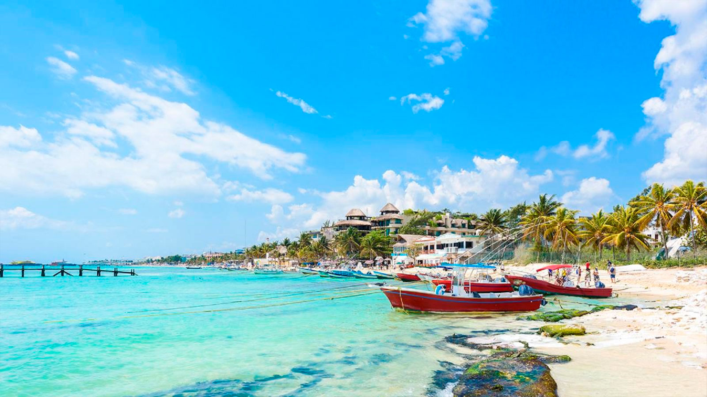

![]()
Playa del Carmen es la cabecera del municipio de Solidaridad, Quintana Roo, localizado al sureste de México, y al sur de Cancún. Está dentro de la zona turística denominada "Riviera Maya". La ciudad (ubicada en las coordenadas 20,62° norte y 87,07° oeste)es bañada por las aguas del Mar Caribe y su principal actividad económica es el turismo.6 Esto viene de la mano que también se genere mucho trabajo en la industria de la construcción, esta es la segunda industria más importante del municipio
En el año 1996 su población era de 10000 habitantes, en el 2003 ya contaba con una población de 49 000 habitantes, debido principalmente a la inmigración de personas de distintas partes de la república en busca del trabajo que demanda la industria turística.[cita requerida] De acuerdo con cifras del Instituto Nacional de Migración de 2003, al menos el 7 por ciento de la población que reside permanentemente en la ciudad es de origen extranjero.[cita requerida] Hasta noviembre de 2004, el crecimiento de este destino turístico se reflejaba en la oferta hotelera de 23 428 habitaciones en operación y una afluencia anual de viajeros estimada en un poco más de dos millones de personas, principalmente de Estados Unidos, Canadá y Europa.[cita requerida] Según el Censo de 2010 la ciudad cuenta con 159,310 Residentes; esto se puede traducir a 14,285 residentes nuevos por año, 39 residentes nuevos por día en los últimos 7 años. Actualmente se declaró que para el año 2018 habrá un total de alrededor 500,000 habitantes.
En tiempos prehispánicos Playa del Carmen se llamaba Xaman Há (en idioma maya: Xaman Ha', ‘Agua del Norte’) y era un punto de partida de los mayas en su peregrinaje al santuario de Ixchel en Cozumel. El primer asentamiento moderno data de principios del siglo XX cuando allí se ubicó una comunidad de pescadores, productores de cocoteros y del árbol del chicle. Durante el siglo XVI los españoles invadieron y conquistaron la mayoría de los sitios mayas. Sin embargo, a diferencia de muchos otros, Playa del Carmen nunca se convirtió en asentamiento español.[cita requerida] Con la llegada de los españoles a México, se tiene registrado que Francisco de Montejo fue quien conquistó esta región en 1526, fundando la villa de Salamanca en donde actualmente se encuentra Xel-Ha. Asimismo, un año más tarde, un lugarteniente de Montejo, Alonso Dávila, estableció su campamento en Xaman-Ha a la cual describía como una villa de pescadores. No obstante dichos acontecimientos, esta zona permaneció muy poco habitada durante todo el periodo de la colonia. La fundación de Playa del Carmen se debió a una compañía colonizadora chiclera de la costa oriental de Yucatán, que en 1908 logró del gobierno de Porfirio Díaz la concesión para explorar los recursos forestales. Hasta mediados de los años ochenta, Playa del Carmen era un pequeño pueblo de paso con menos de 1500 habitantes, aunque en las últimas dos décadas se ha transformado notoriamente al ritmo del crecimiento del turismo.
Playa del Carmen es uno de los sitios más visitados de la Riviera Maya y, en general, del sureste mexicano. La ciudad es un destino turístico y también una conexión a otros atractivos principalmente relacionados con el ecoturismo, el turismo de aventura y playas, entre los que se encuentran:
Parque eco-arqueológico 6 km al sur de Playa del Carmen
Isla ubicada al frente de Playa del Carmen, a 45 minutos de viaje en ferry.
Zona arqueológica maya ubicada en la costa 64 km al sur de Playa del Carmen
Parque ecológico, caracterizado por la caleta en la que el agua subterránea de la península de Yucatán se integra al Mar Caribe